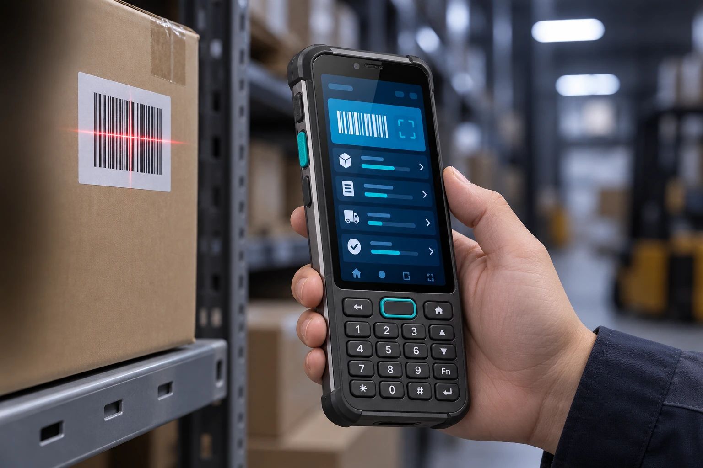
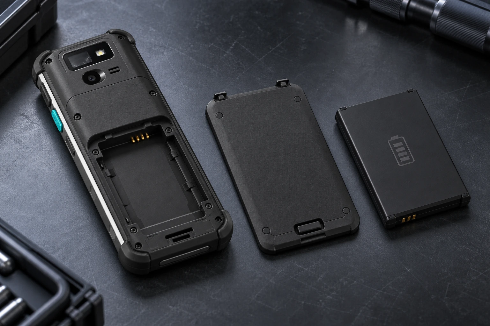
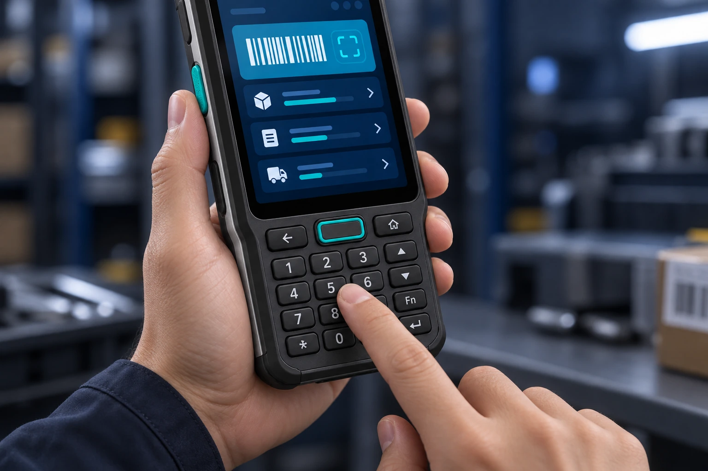

实用移动性能
业务应用切换，操作顺畅衔接。
把性能、识读、连接与防护，落到现场作业的每一步。
业务应用切换，操作顺畅衔接。
连续扫描，提高日常采集效率。
按班次安排换电与备用电池。
清晰呈现任务、图像与业务信息。
触屏查看任务，按键快捷录入。
防尘防水，应对工业现场挑战。
Qualcomm QCM2290 平台搭配 4GB + 64GB 建议配置，面向盘点、收货、查询和任务反馈等日常业务。基于 Android 13，结合项目应用适配，便于开展终端部署和维护。
专业二维扫码方案，覆盖常用一维码、二维码与屏幕条码。青绿色侧面扫码键便于定位，结合实体键盘录入数量，让收货、盘点和面单核验顺畅衔接。

5000mAh 可拆卸电池建议方案，满足日常移动作业需求。按班次准备备用电池，在任务交接时安排换电与充电，让现场工作有序接续。

5.5 英寸触控屏展示任务、商品和扫描结果，实体数字键与功能键辅助数量录入和常用操作。收薄侧框与背盖，保留握持纹理，让移动查询、录入和核验更顺手。

收薄侧框与背盖，减少扫描头的突出感，让长条键盘机更利于日常握持。IP65 与 1.2 米跌落为建议防护方案，面向灰尘、泼溅和频繁搬运环境。
窄侧框 · 平整背盖 · 加固边角
结合移动网络、现场 Wi-Fi 与企业应用，让终端和业务协同运转。
通过移动网络与现场无线网络，同步订单、库存和业务状态。
通过 Bluetooth 连接现场外设，NFC 可按项目选配，拓展近场识别流程。
围绕应用安装、版本更新与项目适配，开展终端部署和日常维护。
面向需要扫码、数量录入与移动查询的一线岗位。
收货、上架、拣选与库存盘点，完成高频货品采集。
门店收货、价签核验与商品盘点，衔接日常门店任务。
面单识读、数量录入与签收状态更新，完成移动收派任务。
按业务需求选择配置，详细方案欢迎与我们沟通。
以上为建议配置，具体参数可能因项目需求及产品版本调整，请以最终规格书为准。
与我们沟通 QC403 的扫码方案、键盘操作、应用适配和现场配件需求。